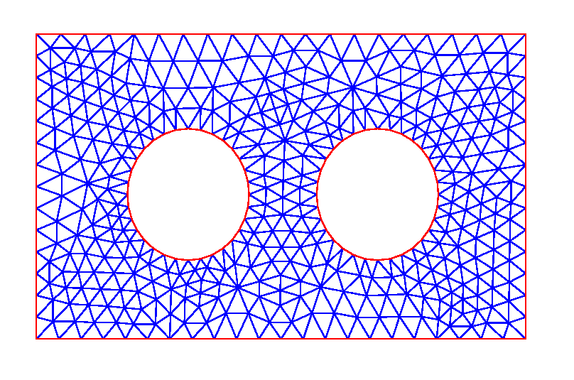

MATH838 FEM and BEM
MATH 838 - Finite Element and Boundary Element Methods
In this course we will discover together some theoretical and
computational aspects of the Finite and Boundary Element
methods. Apart from some basic lecturing, the course will be
very reading oriented, and I'll ask you to develop an ambitious
project, that can be computational (your own coding), applied
(using FEniCS for a complex problem), or theoretical (understand
something hard and explain it to the others)- Instructor: Francisco-Javier “Pancho” Sayas
- Lecture times: MW 2:00-3:15 in EWG207
- Office hours:
By appointment. Or simply show at my office door
(EGW532)
- Website: www.math.udel.edu/~fjsayas/teaching/math838
- Support book: The FEniCS Book, edited by Anders Logg, Kent-Andre Mardal, and Garth Wells, and published as Volume 84 of Lecture Notes in Computational Science and Engineering by Springer, 2012. (Check in http://fenicsproject.org/book/)
- Classnotes for most of the topics will be posted
online
Teaching style
I will post notes for most lectures. I'll expect you to have read the notes by the time you come to class. I'll go over the notes, but not in the same order, but emphasizing ideas. From time to time, I'll ask some of you to present something in class.
The FEM is all about triangulations, so here's one to add some color to this chocolate-flavored page.
It's your choice
Everybody will need to solve some basic exercises from the notes. This knowledge will be evaluated in the take-home exam, roughly 2/3 into the semester. Apart from that you are required to have an open mind and choose what you want to do. If you like analysis, there's plenty of applied Sobolev space theory to learn, if that's what gets your attention. If you like coding, there'll be some proposed coding projects, where you can get your hands dirty in the nontrivial bookkeeping of the Finite Element Methods. (Coding will be done in MATLAB, by the way.) If you don't want to code, but you want to apply the method for complicated problems, you can choose to learn FEniCSActivity log
If you miss a lecture, you'll be able to now what we did by
scrolling down from this point. This log will also help us keep
focused| Week |
Day |
Topic |
| 1 |
02/09 |
Presentation. Linear
functions on triangulations. [L1 and L2] |
| 02/11 |
Weak form of
reaction-diffusion problems and the FEM |
|
| 2 |
02/16 |
FEM assembly [L2] |
| 02/18 |
FEM in practice: the triangulation | |
| 02/20 |
FEM in practice:
matrices, vectors, and error functions |
|
| 3 |
02/23 |
Higher order triangular elements and static condensation [L2] |
| 02/25 |
Counting edges. Elements
of parallelograms [L3] |
|
| 02/27 |
Review. Isoparametric
elements [L4] |
|
| 4 |
03/02 |
Elements on quads. Mass
lumping. |
| 03/04 |
Eigenvalues and FEM in
practice: refining triangulations |
|
| 03/06 |
[Snow day] |
|
| 5 |
03/09 |
Evolution equations [L5].
FEM in practice: Helmholtz |
| 03/11 |
Evolution equations |
|
| 03/13 |
FEM in practice: Newest Vertex Bisection | |
| 6 |
03/20 |
A posteriori error
estimation: concepts, adaptivity, residual estimates
[L6] |
| 7 |
03/23 |
A posteriori error estimates: hierarchical estimators and gradient recovery |
| 03/25 |
Bases and bookkeeping for
higher order elements [L7] |
|
| 8 |
04/06 |
Transition elements. A
taste of FEM analysis [L8] |
| 04/08 |
Scaling arguments |
|
| 9 |
04/13 |
Concergence of FEM. The
Aubin-Nitsche trick. |
| 04/15 |
The lowest order
Raviart-Thomas space [L9] |
|
| 04/17 |
Mixed formulation of the
Laplacian, a.k.a., Darcy flow |
|
| 10 |
04/20 |
Mixed FEM [L9]. Implementation of the lowest order RT elements |
| 04/22 |
Second order RT elements
[L10] |
|
| 11 |
04/27 |
Hybridized formulation of RT-FEM [L10] |
| 04/29 |
BEM |
|
| 05/01 |
BEM |